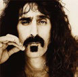

Match the famous person to his / her child.
| 1. Paula Yates | a) Brooklyn |
| 2. Michael Jackson | b) Zola Ivy |
| 3. Sylvester Stallone | c) Dixie |
| 4. Eddie Murphy | d) Ireland |
| 5. Gwyneth Paltrow | e) Prince Michael |
| 6. David Victoria Becham | f) Apple |
| 7. Kim Bassinger | g) Sage Moonblood |
Do Moxie CrimeFighter and Pilot Inspektor* sound like videogames? Believe it or not, both are children’s names. But who would call their children something like that?
The Hollywood elite seem to be obsessed with giving their children unusual names. Psychologists blame it on the competitiveness among stars. Celebrities take baby naming to a higher level. So, what motivates someone to name their kid Moxie or Pilot? Shrinks say that stars feel they have to set themselves apart from normal people. As celebrities, they are used to being adored, so they are afraid people won’t see them as special and different if their kids have boring names. “They’re expressing their creativity, and they’re also expressing their fear,” says Dr Stuart Fischof. “It would be very embarrassing for people to think of them as normal.” But why punish an innocent baby with a crazy name? Because it’s cool, say some. “Everyone I know with an unusual name loves it,” says Moxie CrimeFighter’s dad, magician Penn Jillette. “It’s only the losers named Dave that think having an unusual name is bad, and who cares what they think. They’re named Dave.” Some say that celebrities are the “American aristocracy,” so giving a baby a bizarre name is like a royal title, or legacy. ✪
Below are some unusual names. Which ones are mentioned in the article?
Complete the sentences with a word from below. Then ask and answer the questions.
Hollywood’s obsessions with weird baby names began in the 1960s.  Musician Frank Zappa’s kids suffered through school with names like Diva Thin Muin, Dweezil and Moon Unit. Actress Shannyn Sossamon kept with the space-age theme 40 years later by naming her son Audio Science, in 2003. Michael Jackson’s children are Prince Michael, Prince Michael II (they call him Blanket,) and Paris Michael. The late British writer, Paula Yates was particularly creative in naming her daughters Heavenly Hiraani Tiger Lily, Fifi Trixibelle, Peaches Honeyblossom, and Pixie. Sylvester Stallone named his son Sage Moonblood. Funny man Eddie Murphy was obviously laughing when he named his daughter Zola Ivy. Thankfully, not all celebrity kid names are so original. Actress Gwyneth Paltrow named her daughter Apple. “Apples are so sweet, and they’re wholesome, and it’s biblical,” she said in an interview with Oprah Winfrey. “And I just thought it sounded so lovely and clean.” The Bible is a popular reference book for celebrity baby names, and well-known places and family members are popular too. Footballer David Beckham and Spice Girl wife Victoria named their son Brooklyn and Alec Baldwin and Kim Bassinger chose Ireland. And Jude Law named his daughter Iris after grandma. Child psychologists argue that maybe having such a different name alienates star kids from regular kids even more. In the end, being the child of a celebrity comes with its burdens. But another therapist says that having an odd name is the least of the child’s problems. “With kids of celebrities, in all honesty, the other issues are so big this one pales in comparison.” Maybe Moxie CrimeFighter isn’t so bad after all.